All works displayed have been created exclusively to showcase my skills, and I retain full copyright ownership of these pieces. Projects created for clients or companies are not included due to copyright and confidentiality agreements.
Donut
This was my first project made by following Blender Guru's (Andrew Price) free tutorials on YouTube. Made in Blender. Rendered in 1K with EEVEE. Time taken to complete: a lot.
Sneakers
A more serious project I made (without tutorials) a year after completing the 'Donut' and many free-paid tutorials. Made in Blender. Rendered in 6K (compressed to 1K for the website) with Cycles. Edited in Photoshop. Time taken to complete: one week, 2-4 hours a day.
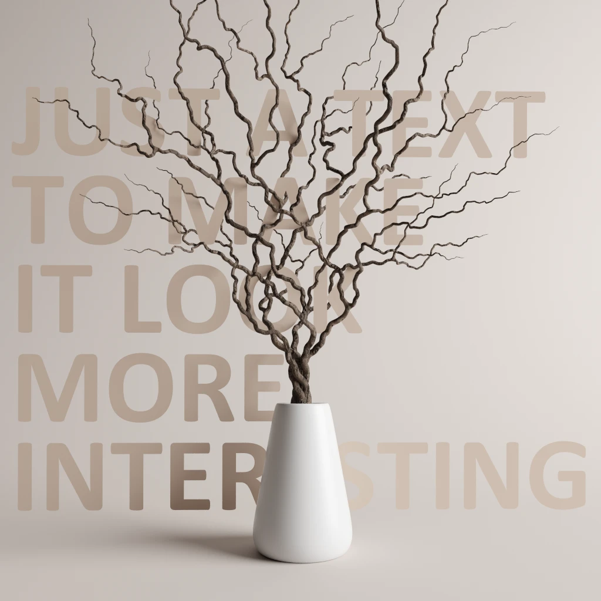
Vase with Branches
Modern vase with modeled (not sculpted) branches, textured with custom-made procedural tree texture (looks better up close). Made in Blender. Edited in Photoshop. Rendered in 6K (compressed to 1K for the website) with Cycles. Time taken to complete: 2 days, 2-4 hours a day.
Lamp
A lamp designed in a futuristic style. Made in Blender. Rendered in 6K (compressed to 1K for the website) with Cycles. Edited in Photoshop. Time taken to complete: 4 days, 2-4 hours a day.
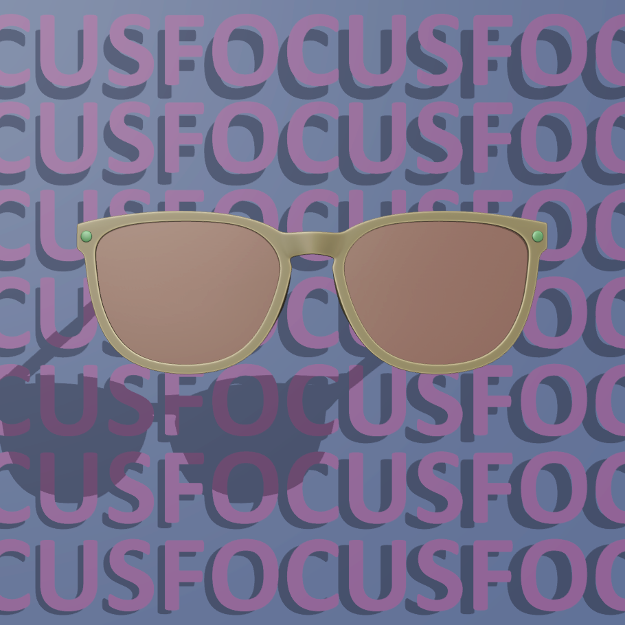
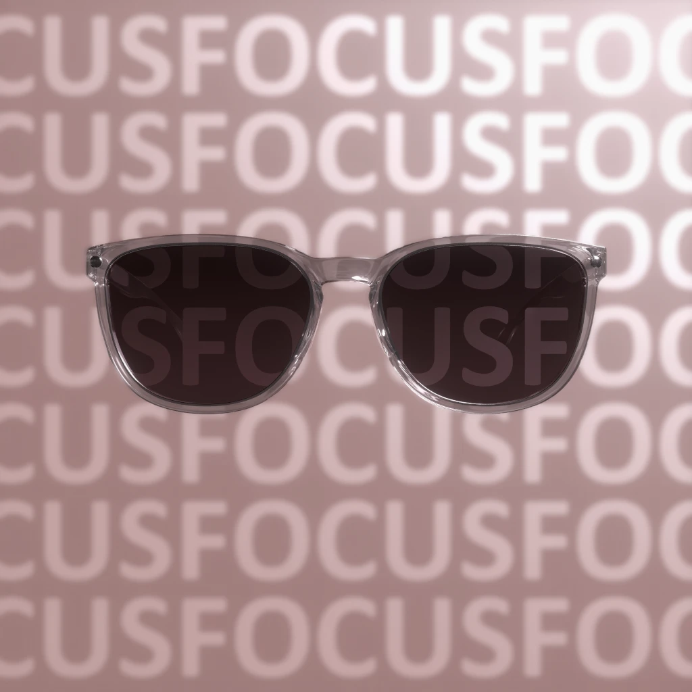
Eyewear
Shades, frames, or simply eyewear in transparent design. Made in Blender. Rendered in 6K (compressed to 1K for the website) with Cycles. Edited in Photoshop. Time taken to complete: 6 days, 1-2 hours a day.
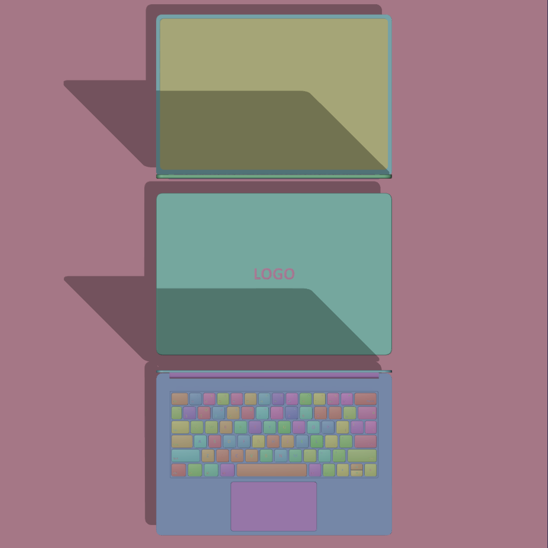
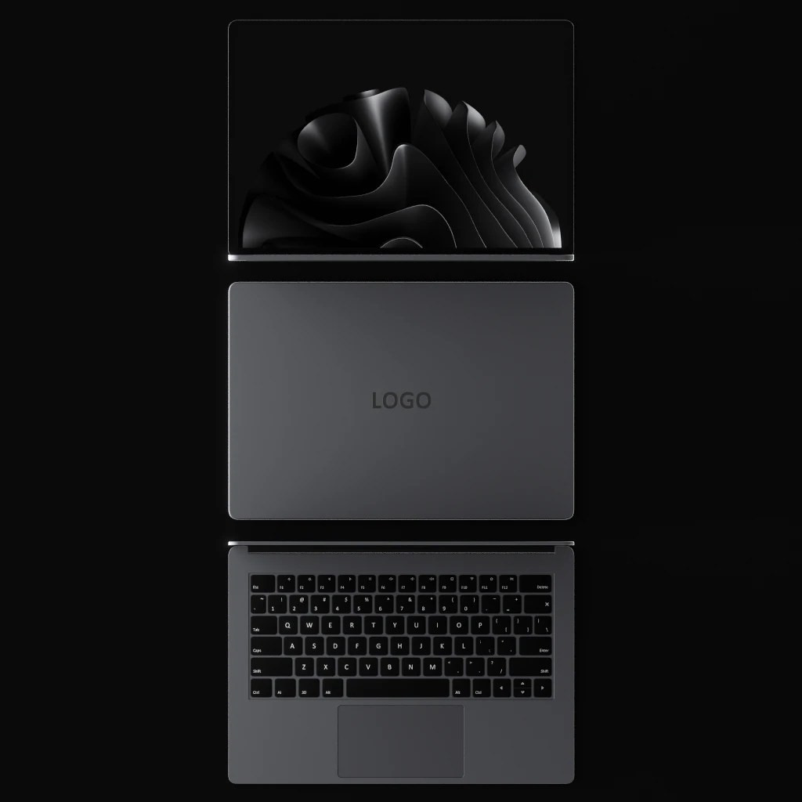
Laptop
Laptop in midnight grey with a modeled keyboard and a custom-made wallpaper. Made in Blender. Rendered in 6K (compressed to 1K for the website) with Cycles. Edited in Photoshop. Time taken to complete: one week, 2-4 hours a day.
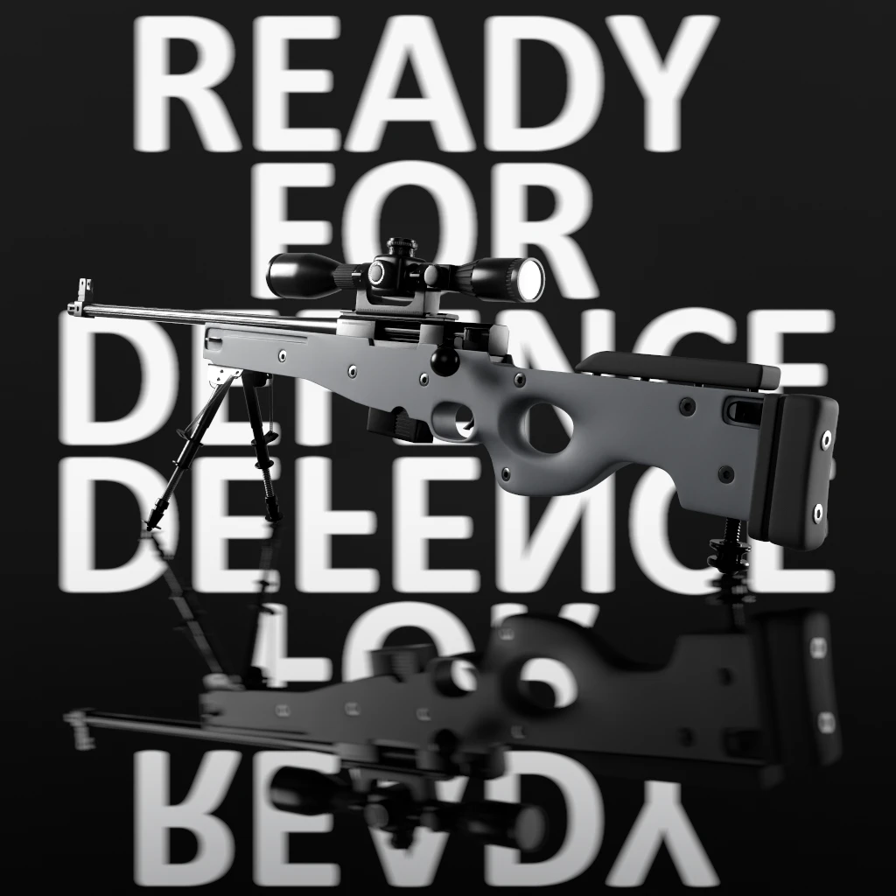
Sniper Rifle
High-Poly sniper rifle model designed for product visualization. Made in Blender. Rendered in 6K (compressed to 1K for the website) with Cycles. Edited in Photoshop. Time taken to complete: 6 days, 2-4 hours a day.
House overgrown with ivy in the middle of the ocean. Made in Blender. Rendered in 6K (compressed to 1K for the website) with Cycles. Edited in Photoshop. Time taken to complete: 4 days, 2-4 hours a day.
Extraterrestrial landscape. Made in Blender. Rendered in 6K (compressed to 1K for the website) with Cycles. Edited in Photoshop. Time taken to complete: 4 hours.
Wallpaper that was made from a single sphere using only: Noise Texture · Wave Texture · Math · Colo Ramp and, of course, Displacement.
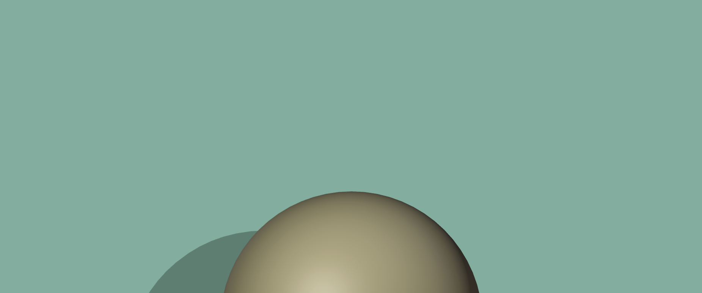
Shot from my short cinematic movie called 'The End of Eternity' (still in progress), also made from a sphere with Displacement, but with more complex node compositions.
Personal projects I'm too lazy to finish (but they still look good even in the viewport :D) because I got busy with 'paying' projects.
Skull sculpture of a very cute creature.
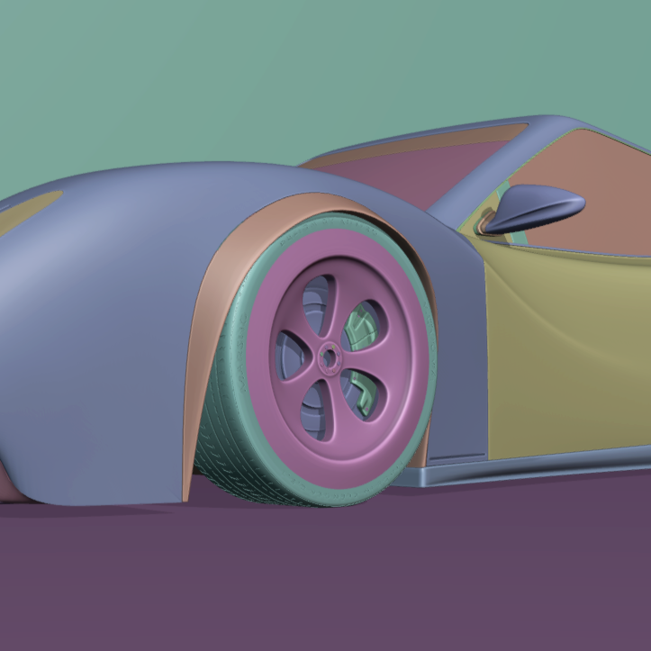
It's supposed to be an automotive car animation.
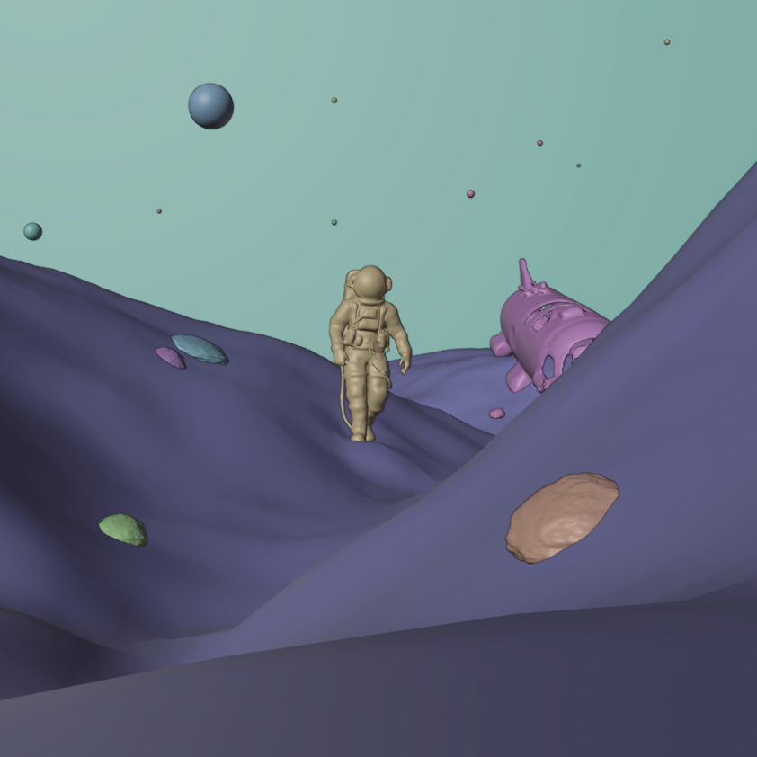
Sculpted scene with an astronaut and a crashed ship.
Low-Poly ship in the ocean.
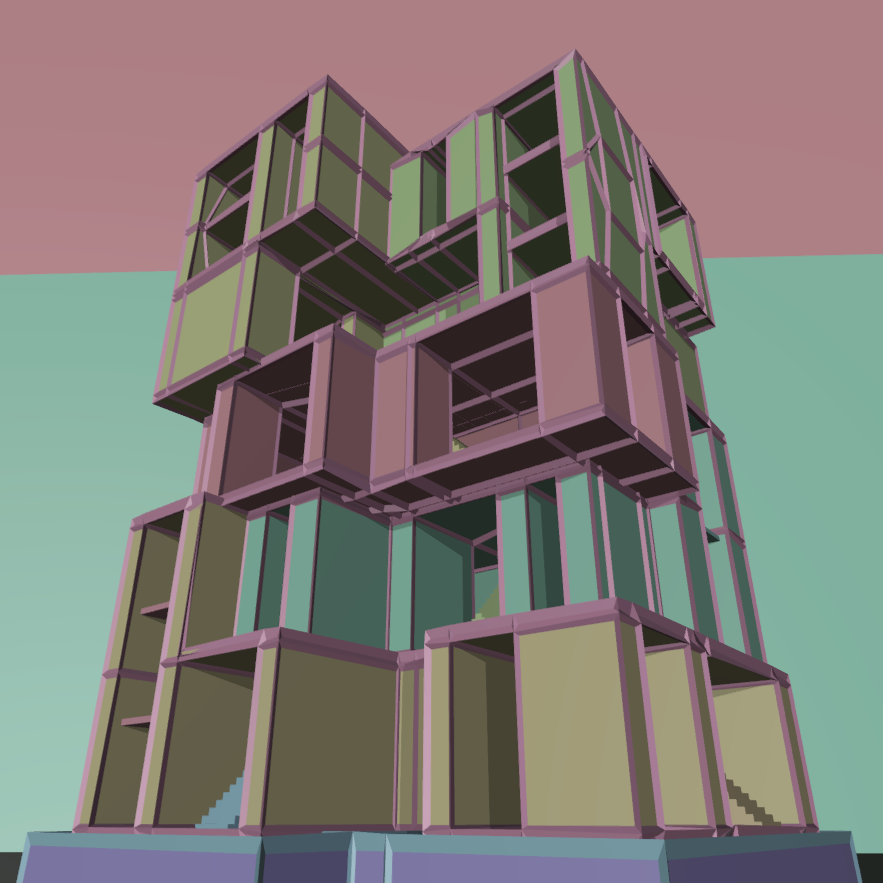
Tall modern/weird structure.
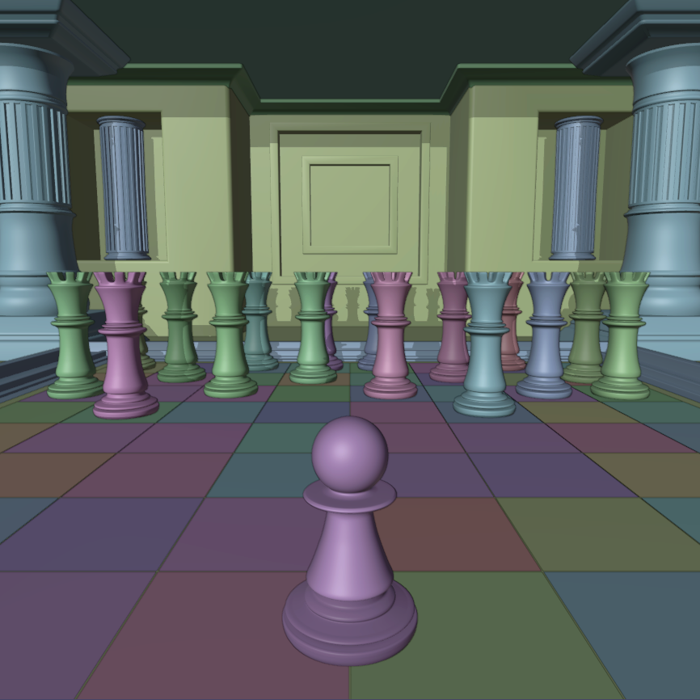
Pawn against the Kings

Room visualization.
Almost collapsed buildings.
To verify the authenticity of the copyright, you can request original high-resolution renders as well as renders from different angles.